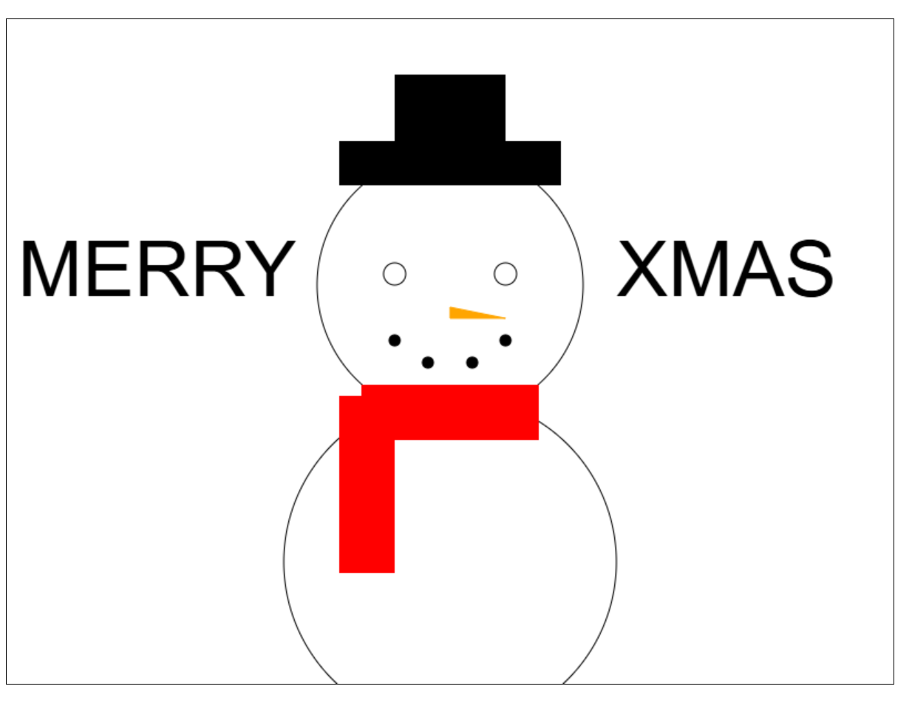

Mijn tech skills aan het einde van de opleiding
Bekijk hier
Mijn soft skills straks
Wat ik later allemaal verwacht te doen is. Ik will teminsten 4 codeer talen kunnen. waarschijnlijk html, css, c# en java. ik wil ook weten hoe cyber security werkt omdat ik dat heel interesant vindt.
Ook wil ik weten hoe ik mijn eigen software kan maken voor games net als Lunar client voor Minecraft . En als laats wil ik weten hoe alle software werkt zoals vsc, photoshop, xd en alle andere softwares die je moet kunnen op deze opleiding
Dingen die ik heb gemaakt


Na Het Ma
Na mijn opleiding aan het Media College Amsterdam wil ik me richten op het maken van apps voor games en het werken met zowel software als hardware. Tijdens mijn studie heb ik geleerd hoe ik verschillende digitale toepassingen kan ontwikkelen, en ik wil deze kennis gebruiken om games en apps te maken die mensen vermaken en uitdagen. Mijn interesse ligt vooral bij het creëren van games, omdat ik het leuk vind om technologie te combineren met design en interactieve ervaringen.
Ik wil leren hoe ik apps en games kan ontwikkelen voor verschillende apparaten, zoals smartphones en computers. Dit betekent dat ik niet alleen leer hoe ik code schrijf, maar ook hoe ik de ervaring voor gebruikers zo goed mogelijk maak en ervoor zorg dat alles goed werkt. Daarnaast ben ik geïnteresseerd in het werken met hardware, zoals het aanpassen van systemen om ze geschikt te maken voor bepaalde taken of het ontwikkelen van nieuwe tools die de manier waarop we games en apps gebruiken, verbeteren.
Op lange termijn wil ik ook werken met nieuwe technologieën, zoals virtual reality (VR) of augmented reality (AR), die de manier waarop we games spelen en apps gebruiken, zullen veranderen. Ik wil graag bijdragen aan deze innovaties en technologieën verder ontwikkelen. Mijn doel is om games en apps te maken die niet alleen goed werken, maar ook echt een unieke en plezierige ervaring bieden voor de gebruikers.
.jpg)
Mijn droom baan
Mijn droom baan is werken is een cyber security bedrijf. Ik begin om 9 uur 9:15 een standup 12:00 overleggen met klant 14:00 samenwerken met collega's en 18:00 klaar ben.
Een andere droom
Ik wil ook heel graag hardware modden net als een psp customisen of een 3ds modden. dat lijkt mij heel leuk en is een droom van mij. Ik zou graag een psp willen maken met een transparent shell en gemod met alle psp games
Ik wil ook graag gitaar leren spelen. Ik kan al een beetje gitaar maar dat is aleen aucoustisch. Graag wil ik electrisch gitaar leren kunnen. Ik wil ook gewoon muziek maken dat lijkt mij ook heel leuk om te doen.
×